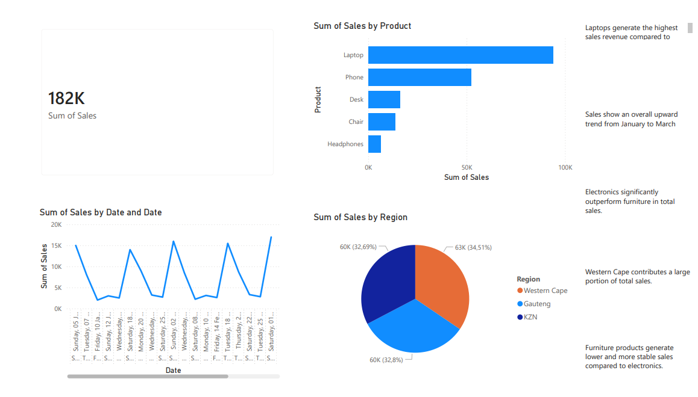

Sales Analysis Dashboard
A business dashboard project focused on tracking sales performance, product trends, and customer insights.
- Identified top-performing products and sales categories.
- Highlighted revenue patterns to support better business decisions.
- Built a clear dashboard for fast performance monitoring.